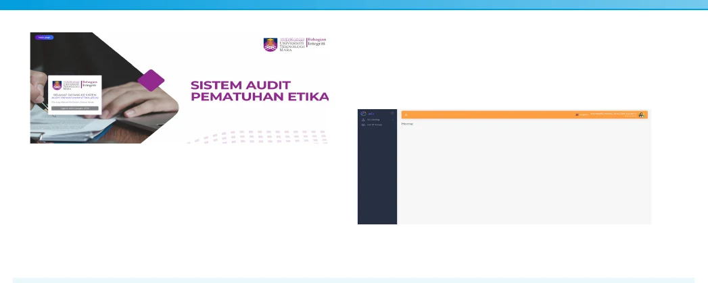
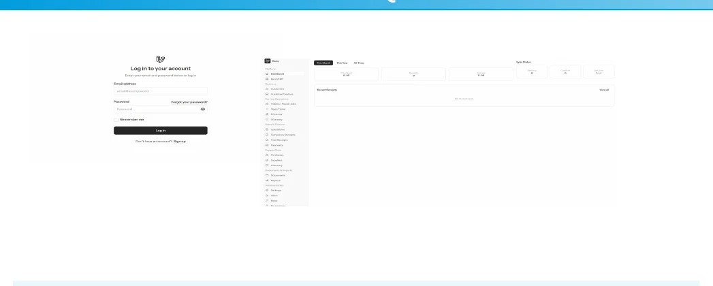

A little about me
A system developer focused on useful outcomes.
I’m Muhamad Ikhmal Hijaz, an IT professional working across system development, databases, maintenance, and business intelligence reporting since 2017.
IT services · Systems · Data
I help individuals and businesses fix technology problems, build useful systems, and turn operational needs into dependable digital solutions.
A little about me
I’m Muhamad Ikhmal Hijaz, an IT professional working across system development, databases, maintenance, and business intelligence reporting since 2017.
IT services / 01
From everyday computer problems to business systems, I provide practical support with a clear scope and straightforward communication.
Windows setup, software troubleshooting, virus removal, optimisation, hardware upgrades, cleaning, and maintenance.
Office support visits, device health checks, inventory setup, monthly IT support, and practical consultation.
Websites and business systems designed around your workflow, information needs, users, and daily operations.
Data backup, file transfer, system migration, printer setup, network printers, and logical data recovery.
Need pricing or the complete service list?
View services & pricingSelected work / 02
A snapshot of institutional platforms and management systems I have helped develop, improve, and support.

A digital ecosystem bringing together public information, online services, data management, and geospatial views.
Web portal · Data management · Geospatial
An ethics compliance audit system supporting audit workflows, status monitoring, and centralised records.
Audit workflow · Compliance · Dashboard
A subscription-based management system with secure access, structured records, activity monitoring, and a central dashboard.
Access control · Dashboard · OperationsSee the broader project collection and subscription product.
Explore all workBuild together
Tell me what is not working—or what you want to build—and we can find a practical next step.